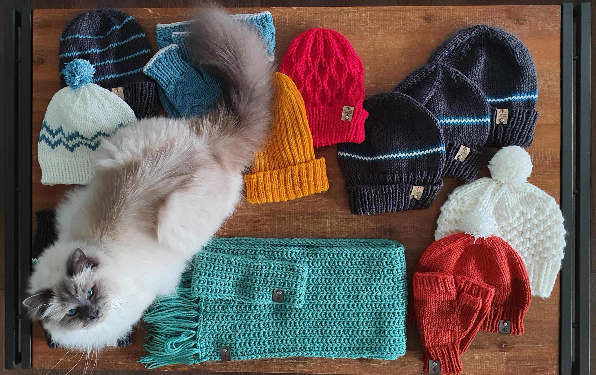
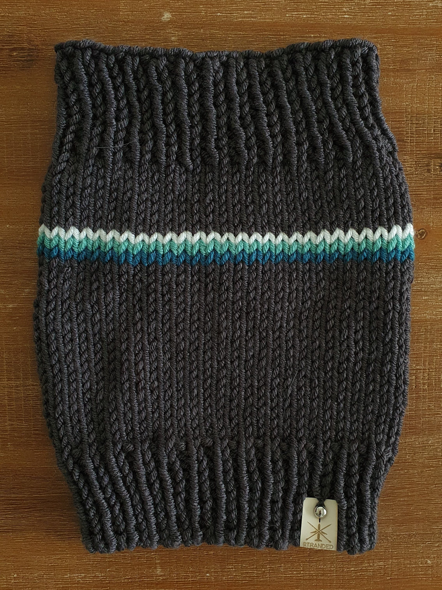
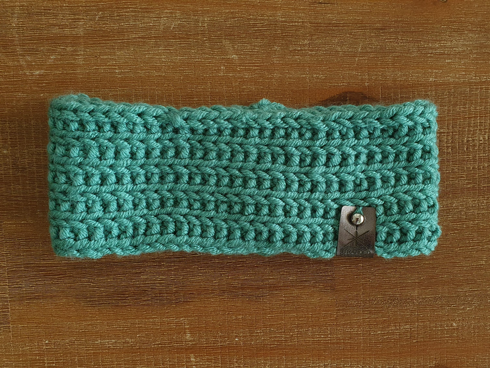
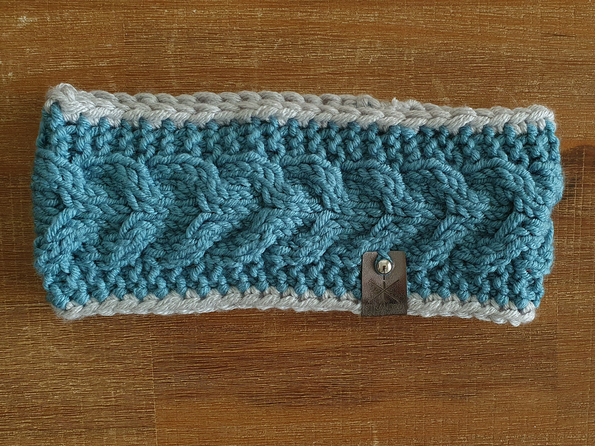
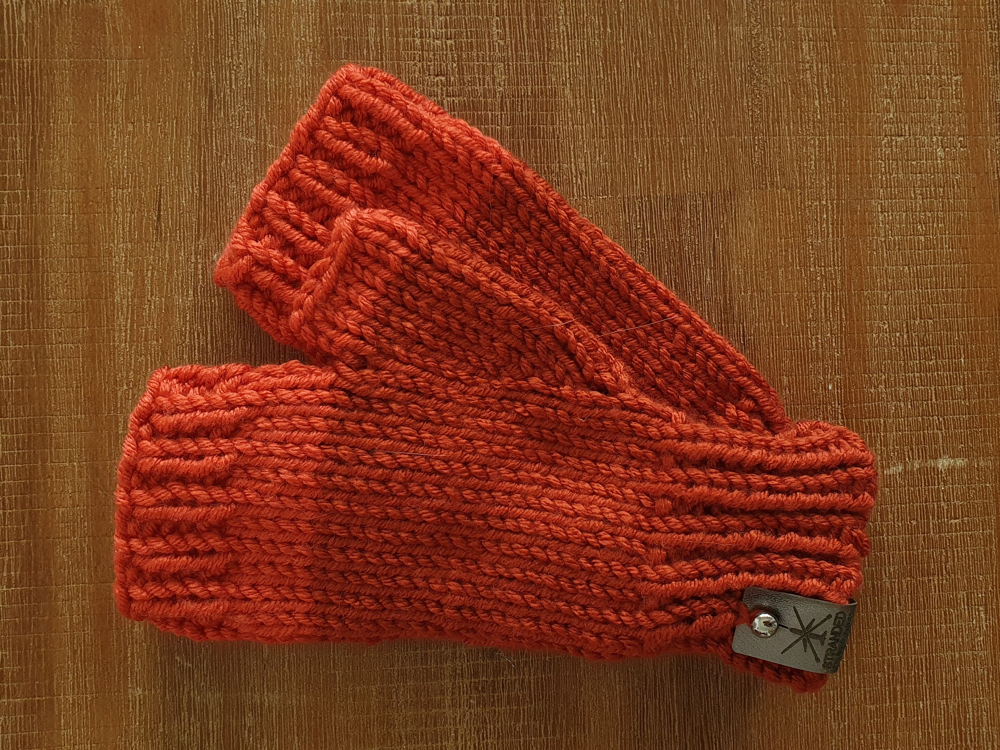
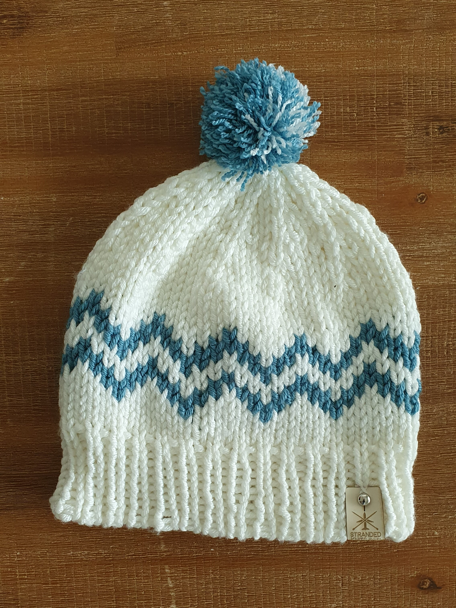

Object name
Scheepjes Chunky Monkey
Lots
20.12.2020

Neck cowl
Scheepjes Chunky Monkey
Slate (1829), Eucalyptus (1100)
12.12.2020

Headband
Scheepjes Chunky Monkey
Eucalyptus (1100)
20.12.2020

Headband
Scheepjes Chunky Monkey
Carolina Blue (1212)
20.12.2020

Mittens
Scheepjes Chunky Monkey
Rust (0987), Flame (2902)
20.12.2020

Hat
Scheepjes Chunky Monkey
Cream (1001), Carolina Blue (1212)
20.12.2020